WG.48.4: Mutual Recursive Free Types in Different Paragraphs
Proposal for the Z Standard, by Wolfgang Grieskamp (wg@cs.tu-berlin.de), November 11, 1998, (v3) , postscript version
Mutual recursive free types may appear in different paragraphs, and
not just one paragraph where they are separated by &. It is in
general possible to refer to Z names in a free type definition which are
themselves defined in dependency of this free type.
Mutual recursive free type definitions are an essential feature to let Z capture algebraic-axiomatic specification techniques.
The current solution to allow these definitions only in one single paragraph is unsatisfactory, since mutual recursive free type systems might become relative large (consider e.g. the abstract syntax of Z itself). A Z specification is in most practical cases given as a literal specification document, where the Z paragraphs are embedded in arbitrary documentation text. In these documents, Z paragraphs are atomic entities. Having one very large such entity is not adequate.
Furthermore, since mutual recursive free types are in principle allowed for Standard Z, it is un-orthogonal that is not possible to extend this recursion also to other simple names, such as in:
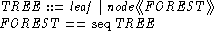
This is syntactically not possible though it is semantically well understood.
This proposal depends on paragraph reordering, WG.48.3.
Tools working in batch mode which don't implement this feature may be still regarded as conforming, since transformations can build which translate free types for them (see syntactic and semantic transformations below).
The syntax of a single free type definition is transformed (before type-checking) into the following paragraphs:
For example, the specification fragment above is transformed (where denotes the new kind of free-type paragraph which doesn't introduces a new given type):
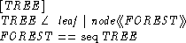
Now, paragraph reordering (WG.48.3) takes over.
(It is not necessarily intended that that the axiom becomes part of the visible Z syntax.)
The problem to handle is that the expressions used for the domain of constructor functions are in general opaque regarding dependencies to the fixed type of the axiom. They may contain references to constants defined by arbitrary axioms dependent of the fixed type. (See TREE and FOREST as a simple example of such references.) This hinders the syntactic substitution in the induction axiom generated from a free type (Clause 15.2.3.1). Consider a type
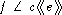
The induction axiom states:
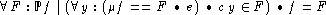
The  phrase only captures direct occurrences of f in e.
phrase only captures direct occurrences of f in e.
There is a solution to this problem which I will describe below. On the one hand, this solution enhances the power of the free-type construct to allow definitions such as TREE and FOREST, but on the other also puts a constraint on free types which is not present in the current standard. (This constraint, however, may be regarded as excluding strange free-type inductions which are unwanted anyway.)
The solution bases on the observation that in free type systems, the
recursive occurrences of interest during fixpoint-construction are
visible in the domain type of the constructor functions. Let the
domain expression, e, have type
 (where
(where
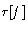
denotes a type parameterized over f), then the induction axiom is reformulated as:
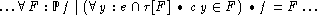
The expression
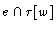
denotes a set with the opaque ``structure'' of e but with elements ``embedded'' in this structure which come from w - garbage from the f currently fixed is excluded this way. For the TREE example above, e.g., we get the induction axiom:

If a prover uses this axiom for induction, it may simplify the expression
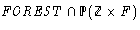
- which after unfolding of FOREST and applying distributivity of intersection and sequence axioms yields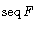
.The restriction imposed by this solution is that only those occurrences of f are captured by induction which appear in the type
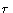
. Consider, e.g., the following type definition
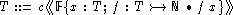
The occurrence of T in the constructors domain will not be considered
in the refined version of the induction above, since the type of the
constructors domain elements is
 .
But in the current
definition of induction in the Standard, it would be captured by syntactic
substitution.
.
But in the current
definition of induction in the Standard, it would be captured by syntactic
substitution.
I haven't found a more useful example which raises the same problem, and I doubt that it exists. Recursive free-types are a tool for describing trees and terms, where the structure of the defined object is replicated at recursion points. In all these applications, the recursive references are visible in the constructor domains. For the other cases, if the proposed modification of induction would be accepted, then a possible desired fixpoint would just not be expressible by free-types, without effecting the consistency or power of the Z language itself.
Mutual Recursion: Because of the possibility of opaque
references to other free types in the domain of a constructor,
dependencies between free types are not obvious from the syntax. The
solution to this is to place the induction axiom at the end of a
section, performing simultaneous induction over all free types
in the section (using the type
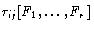
in the intersection described above).
Mutual recursive free types are allowed. It is in general possible to refer to Z names in a free type definition which are defined themselves in dependency of the free type.
& as an ASCII keyword
& parts of free types